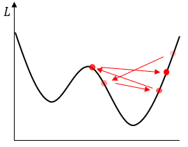

Adaptive Learning Rates: AdaGrad, RMSProp, Adam
Overview1 2
Describe the adaptive learning rate used in gradient descent and the models that apply it: AdaGrad, RMSProp, and Adam.
Explanation
In gradient descent, the learning rate learning rate is an important parameter that determines how fast the parameter converges, how successful the method is, and so on. It is often written as $\alpha$, $\eta$, and determines how much of the gradient is taken into account when updating the parameter.


$$ \boldsymbol{\theta}_{i+1} = \boldsymbol{\theta}_{i} - \alpha \nabla L (\boldsymbol{\theta}_{i}) $$
In basic gradient descent, $\alpha$ is described as a constant, and in this case, gradient is a vector, so the same learning rate applies to all variables (parameters) as follows
$$ \alpha \nabla L (\boldsymbol{\theta}) = \alpha \begin{bmatrix} \dfrac{\partial L}{\partial \theta_{1}} & \dfrac{\partial L}{\partial \theta_{2}} & \cdots & \dfrac{\partial L}{\partial \theta_{k}} \end{bmatrix} = \begin{bmatrix} \alpha\dfrac{\partial L}{\partial \theta_{1}} & \alpha\dfrac{\partial L}{\partial \theta_{2}} & \cdots & \alpha\dfrac{\partial L}{\partial \theta_{k}} \end{bmatrix} $$
So, by thinking of the learning rate as a vector like $\boldsymbol{\alpha} = (\alpha_{1}, \alpha_{2}, \dots, \alpha_{k})$, we can generalize the gradient term to the expression below.
$$ \boldsymbol{\alpha} \odot \nabla L (\boldsymbol{\theta}) = \begin{bmatrix} \alpha_{1}\dfrac{\partial L}{\partial \theta_{1}} & \alpha_{2}\dfrac{\partial L}{\partial \theta_{2}} & \cdots & \alpha_{k}\dfrac{\partial L}{\partial \theta_{k}} \end{bmatrix} $$
where $\odot$ is the matrix’s [Adamar product (componentwise product)] (../3436). The learning rate $\boldsymbol{\alpha}$, which varies from parameter to parameter in this way, is called the adaptive learning rateadaptive learning rate. Since the following techniques rely on the gradient to determine the adaptive learning rate, $\boldsymbol{\alpha}$ can be viewed as a function of $\boldsymbol{\alpha}$.
$$ \boldsymbol{\alpha} (\nabla L(\boldsymbol{\theta})) = \begin{bmatrix} \alpha_{1}(\nabla L(\boldsymbol{\theta})) & \alpha_{2}(\nabla L(\boldsymbol{\theta})) & \dots & \alpha_{k}(\nabla L(\boldsymbol{\theta})) \end{bmatrix} $$
Below we introduce AdaGrad, RMSProp, and Adam. It is important to note that there is no absolute winner among these optimizers, including the [momentum] (../3528) technique. Different fields and different tasks require different optimizers, so it’s not a good idea to make a judgment or question about “what’s best”. It’s helpful to find out what’s commonly used in your field, and if you don’t have that or aren’t sure, you can try SGD+Momentum or Adam.
AdaGrad
AdaGrad is an adaptive learning rate technique introduced in the paper “Adaptive subgradient methods for online learning and stochastic optimization” by Duchi et al. (2011). The name is short for adaptive gradient and is pronounced as [AY-duh-grad] or [AH-duh-grad]. In AdaGrad, the learning rate for each parameter is set inversely proportional to the gradient. Consider the vector $\mathbf{r}$ as follows.
$$ \mathbf{r} = (\nabla L) \odot (\nabla L) = \begin{bmatrix} \left( \dfrac{\partial L}{\partial \theta_{1}} \right)^{2} & \left( \dfrac{\partial L}{\partial \theta_{2}} \right)^{2} & \cdots & \left( \dfrac{\partial L}{\partial \theta_{k}} \right)^{2} \end{bmatrix} $$
For a global learning rate global learning rate $\epsilon$, an arbitrary small number $\delta$, the adaptive learning rate $\boldsymbol{\alpha}$ is given by
$$ \boldsymbol{\alpha} = \dfrac{\epsilon}{\delta + \sqrt{\mathbf{r}}} $$
As you can see from the formula, we apply a smaller learning rate for variables with larger components of the gradient and a larger learning rate for variables with smaller components of the gradient. The $\delta$, as you might guess, prevents the denominator from being $0$ or too small a number, and is often used between $10^{-5} \sim 10^{-7}$, and is often used for values between $10^{-5} and $10^{-7}. Also, the learning rate is cumulative from iteration to iteration. The gradient at the $i$th iteration is called $\nabla L _{i} = \nabla L (\boldsymbol{\theta}_{i})$,
$$ \begin{align} \mathbf{r}_{i} &= (\nabla L_{i}) \odot (\nabla L_{i}) \nonumber \\ \boldsymbol{\alpha}_{i} &= \boldsymbol{\alpha}_{i-1} + \dfrac{\epsilon}{\delta + \sqrt{\mathbf{r}_{i}}} = \sum_{j=1}^{i} \dfrac{\epsilon}{\delta + \sqrt{\mathbf{r}_{j}}} \\ \boldsymbol{\theta}_{i+1} &= \boldsymbol{\theta}_{i} - \boldsymbol{\alpha}_{i} \odot \nabla L_{i} \nonumber \end{align} $$
| Algorithm: AdaGrad | ||
|---|---|---|
| Input | Global learning rate $\epsilon$, small positive value $\delta$, epochs $N$ | |
| 1. | Initialize parameters $\boldsymbol{\theta}$ with random values. | |
| 2. | Initialize learning rates $\boldsymbol{\alpha} = \mathbf{0}$. | |
| 3. | for $i = 1, \cdots, N$ do | |
| 4. | $\mathbf{r} \leftarrow \nabla L(\boldsymbol{\theta}) \odot \nabla L(\boldsymbol{\theta})$ | # Compute gradients and square each component |
| 5. | $\boldsymbol{\alpha} \leftarrow \boldsymbol{\alpha} + \dfrac{\epsilon}{\delta + \sqrt{\mathbf{r}}}$ | # Update adaptive learning rates |
| 6. | $\boldsymbol{\theta} \leftarrow \boldsymbol{\theta} - \boldsymbol{\alpha} \odot \nabla L(\boldsymbol{\theta})$ | # Update parameters |
| 7. | end for |
RMSProp
RMSProp, short for Root Mean Square Propagation, is an adaptive learning rate technique proposed in Geoffrey Hinton’s lecture Neural networks for machine learning. It is basically a variant of AdaGrad, only with the addition of $(1)$ replaced by a [weighted sum] (../2470/#exponentially weighted average) so that the added term decreases exponentially. For $\rho \in (0,1)$,
$$ \boldsymbol{\alpha}_{i} = \rho \boldsymbol{\alpha}_{i-1} + (1-\rho) \dfrac{\epsilon}{\delta + \sqrt{\mathbf{r}_{i}}} = (1-\rho) \sum_{j=1}^{i} \rho^{i-j} \dfrac{\epsilon}{\delta + \sqrt{\mathbf{r}_{j}}} $$
Large values such as $\rho = 0.9, 0.99$ are commonly used.
| Algorithm: RMSProp | ||
|---|---|---|
| Input | Global learning rate $\epsilon$, small positive value $\delta$, decay rate $\rho$, epochs $N$ | |
| 1. | Initialize parameters $\boldsymbol{\theta}$ with random values. | |
| 2. | Initialize learning rates $\boldsymbol{\alpha} = \mathbf{0}$. | |
| 3. | for $i = 1, \dots, N$ do | |
| 4. | $\mathbf{r} \leftarrow \nabla L(\boldsymbol{\theta}) \odot \nabla L(\boldsymbol{\theta})$ | # Compute gradients and square each component |
| 5. | $\boldsymbol{\alpha} \leftarrow \rho \boldsymbol{\alpha} + (1-\rho) \dfrac{\epsilon}{\delta + \sqrt{\mathbf{r}}}$ | # Update adaptive learning rates |
| 6. | $\boldsymbol{\theta} \leftarrow \boldsymbol{\theta} - \boldsymbol{\alpha} \odot \nabla L(\boldsymbol{\theta})$ | # Update parameters |
| 7. | end for |
Adam
Adamderives from "apative moments" is an optimizer introduced in the paper "Adam: A method for stochastic optimization" (Kingma and Ba, 2014). It combines the adaptive learning rate and the momentum technique and can be thought of as RMSProp + momentum. Once you understand RMSProp and momentum, it’s not hard to understand Adam. Here’s how RMSProp, momentum, and Adam compare to each other If $\nabla L_{i} = \nabla L(\boldsymbol{\theta}_{i})$,
| Momentum | $\mathbf{p}_{i} = \beta_{1}\mathbf{p}_{i-1} + \nabla L_{i} \quad (\mathbf{p}_{0}=\mathbf{0}) \\ \boldsymbol{\theta}_{i+1} = \boldsymbol{\theta}_{i} - \alpha \mathbf{p}_{i}$ |
| RMSProp | $\mathbf{r}_{i} = \nabla L_{i} \odot \nabla L_{i} \\ \boldsymbol{\alpha}_{i} = \beta_{2} \boldsymbol{\alpha}_{i-1} + (1-\beta_{2})\dfrac{\epsilon}{\delta + \sqrt{\mathbf{r}_{i}}} \quad (\boldsymbol{\alpha}_{0}=\mathbf{0})\\ \boldsymbol{\theta}_{i+1} = \boldsymbol{\theta}_{i} - \boldsymbol{\alpha}_{i} \odot \nabla L_{i}$ |
| Adam | $\mathbf{p}_{i} = \beta_{1}\mathbf{p}_{i-1} + (1-\beta_{1}) \nabla L_{i-1} \quad (\mathbf{p}_{0}=\mathbf{0}) \\\\[0.5em] \hat{\mathbf{p}}_{i} = \dfrac{\mathbf{p}_{i}}{1-(\beta_{1})^{i}} \\\\[0.5em] \mathbf{r}_{i} = \beta_{2} \mathbf{r}_{i-1} + (1-\beta_{2}) \nabla L_{i} \odot \nabla L_{i} \\\\[0.5em] \hat{\mathbf{r}}_{i} = \dfrac{\mathbf{r}}{1-(\beta_{2})^{i}} \\\\[0.5em] \hat{\boldsymbol{\alpha}}_{i} = \dfrac{\epsilon}{\delta + \sqrt{\hat{\mathbf{r}}_{i}}} \\\\[0.5em] \boldsymbol{\theta}_{i+1} = \boldsymbol{\theta}_{i} - \hat{\boldsymbol{\alpha}_{i}} \odot \hat{\mathbf{p}_{i}} $ |
The reason we divide $1 - \beta^{i}$ when calculating $\hat{\mathbf{p}}_{i}$ and $\hat{\mathbf{r}}_{i}$ is to make them weighted averages since $\mathbf{p}_{i}$ and $\mathbf{r}_{i}$ are weighted sums.
| Algorithm: Adam | ||
|---|---|---|
| Input | Global learning rate $\epsilon$ (recommended value is $0.001$), epochs $N$ | |
| Small constant $\delta$ (recommended value is $10^{-8}$) | ||
| Decay rates $\beta_{1}, \beta_{2}$ (recommended values are $0.9$ and $0.999$ respectively) | ||
| 1. | Initialize parameters $\boldsymbol{\theta}$ with random values. | |
| 2. | Initialize learning rates $\boldsymbol{\alpha} = \mathbf{0}$. | |
| 3. | Initialize momentum $\mathbf{p} = \mathbf{0}$. | |
| 4. | for $i = 1, \dots, N$ do | |
| 5. | $\mathbf{p} \leftarrow \beta_{1}\mathbf{p} + (1-\beta_{1}) \nabla L$ | # Update momentum using weighted sum |
| 6. | $\hat{\mathbf{p}} \leftarrow \dfrac{\mathbf{p}}{1-(\beta_{1})^{i}}$ | # Correct with weighted average |
| 7. | $\mathbf{r} \leftarrow \beta_{2} \mathbf{r} + (1-\beta_{2}) \nabla L \odot \nabla L$ | # Update gradient square vector with weighted sum |
| 8. | $\hat{\mathbf{r}} \leftarrow \dfrac{\mathbf{r}}{1-(\beta_{2})^{i}}$ | # Correct with weighted average |
| 9. | $\hat{\boldsymbol{\alpha}} \leftarrow \dfrac{\epsilon}{\delta + \sqrt{\hat{\mathbf{r}}}}$ | # Update adaptive learning rates |
| 10. | $\boldsymbol{\theta} = \boldsymbol{\theta} - \hat{\boldsymbol{\alpha}} \odot \hat{\mathbf{p}}$ | # Update parameters |
| 11. | end for |